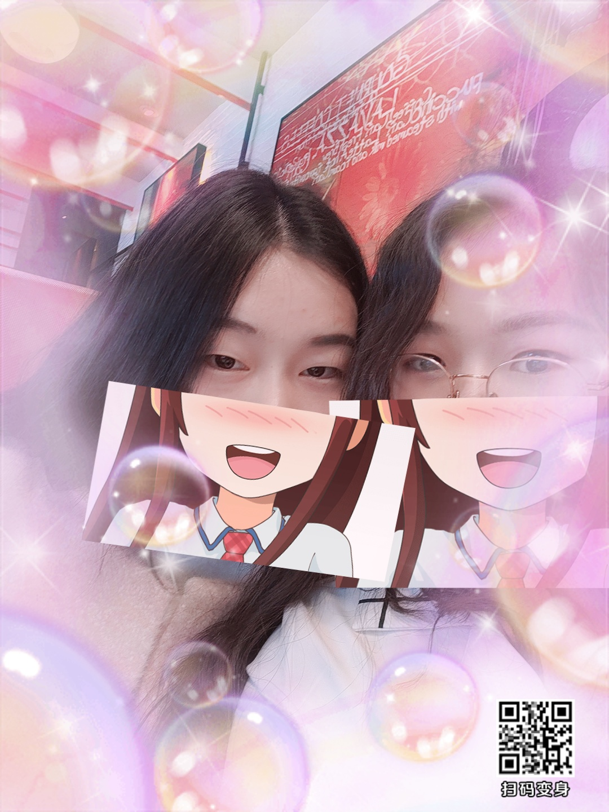
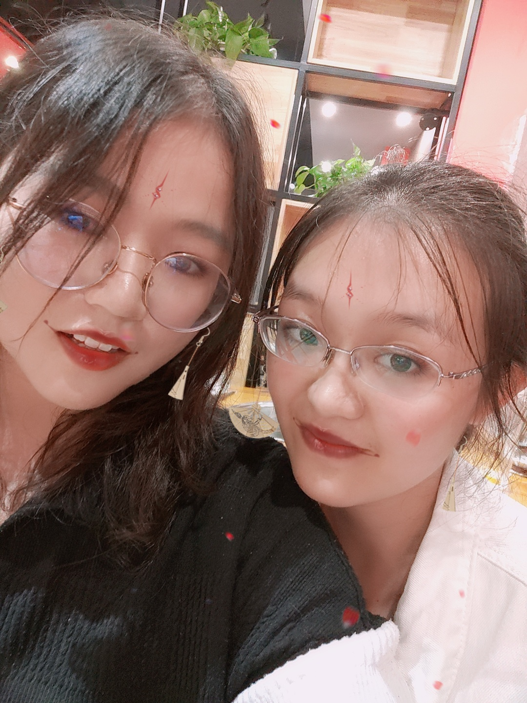

冥红尘中寻觅着知音。谁又能真正的找到知音？ 谁又能真正的与自己共鸣？在每一个人的生命里，言行举止、所作所为都不可能做到言行一致、 表里如一，就算是我们本人也不可能完全清楚明白自己的心理，又怎敢去奢望别人能知懂自己。

朋友就是彼此一种心灵的感应，是一种心照不宣的感悟。你的举手投足， 一颦一笑，一言一行，哪怕是一个眼神、一个动作、一个背影、一个回眸，朋友都会心领神会， 不需要彼此的解释，不需要多言，不需要废话，不需要张扬，都会心心相印的。 那是一种最温柔、最惬意、最畅快、最美好的意境。